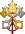
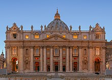
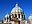
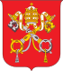

Holy See
Holy See | |
|---|---|
| Ecclesiastical jurisdiction | Diocese of Rome Worldwide[note 1] 41°54.2′N 12°27.2′E / 41.9033°N 12.4533°E |
| Official languages | Latin[1] |
| Working language | Italian[2] |
| Religion | Catholic Church (Official) |
| Demonym(s) | Papal Pontifical |
| Type | Apostolic[note 2] Theocracy[note 3] |
| Government | Unitary theocratic Catholic elective absolute monarchy[3][4][5][6] |
• Pope | Francis |
| Fernando Vérgez Alzaga | |
| Pietro Parolin | |
| Kevin Farrell | |
| Sovereign subject of international law | |
| 1st century by Saint Peter ("Prince of the Apostles") | |
| Early Church – Antiquity (Canon law; legal history) | |
| 728 (territory in Duchy of Rome by Lombard King Liutprand) | |
| 756 (sovereignty in Duchy of Rome reaffirmed by Frankish King Pepin) | |
| 756–1870 1075: Dictatus papae 1177: Treaty of Venice (sovereignty reaffirmed by Emperor Frederick I of the Holy Roman Empire) | |
| 1870–1929 (under the Kingdom of Italy) | |
| 1929– (Lateran Treaty with Italy) | |
Website Vatican.va | |
The Holy See[7][8] (Latin: Sancta Sedes, lit. 'Holy Chair[9]', Ecclesiastical Latin: [ˈsaŋkta ˈsedes]; Italian: Santa Sede [ˈsanta ˈsɛːde]), also called the See of Rome, Petrine See or Apostolic See,[10] is the jurisdiction of the pope in his role as the Bishop of Rome. It includes the apostolic episcopal see of the Diocese of Rome, which has ecclesiastical jurisdiction over the worldwide Catholic Church and sovereignty or governance over the city-state known as the Vatican City.[11] As the supreme body of government of the Catholic Church, the Holy See holds the status of a sovereign juridical entity under international law.[12]
According to Catholic tradition and historical records, it was founded in the first century by Saints Peter and Paul, and by virtue of the doctrines of Petrine and papal primacy, it is the focal point of full communion for Catholic Christians around the world.[13] The Holy See is headquartered in, operates from, and exercises "exclusive dominion" over the independent Vatican City State enclave in Rome, of which the Pope is sovereign.[14]
The Holy See is administered by the Roman Curia (Latin for "Roman Court"), which is the central government of the Catholic Church.[15][16] The Roman Curia includes various dicasteries, comparable to ministries and executive departments, with the Cardinal Secretary of State as its chief administrator. Papal elections are carried out by part of the College of Cardinals.
Although the Holy See is often metonymically referred to as the "Vatican", the Vatican City State was distinctively established with the Lateran Treaty of 1929, between the Holy See and Italy, to ensure the temporal, diplomatic, and spiritual independence of the papacy.[17] As such, papal nuncios, who are papal diplomats to states and international organizations, are recognized as representing the Holy See and not the Vatican City State, as prescribed in the Canon law of the Catholic Church. The Holy See is thus viewed as the central government of the Catholic Church and Vatican City.[16] The Catholic Church, in turn, is the largest non-government provider of education and health care in the world.[18]
The Holy See maintains bilateral diplomatic relations with 183 sovereign states, signs concordats and treaties, and performs multilateral diplomacy with multiple intergovernmental organizations, including the United Nations and its agencies, the Council of Europe, the European Communities, the Organization for Security and Co-operation in Europe, and the Organization of American States.[19][20][21]
Terminology
[edit]The word "see" comes from the Latin word sedes, meaning 'seat', which refers to the episcopal throne (cathedra). The term "Apostolic See" can refer to any see founded by one of the Twelve Apostles, but, when used with the definite article, it is used in the Catholic Church to refer specifically to the see of the Bishop of Rome, whom that Church sees as the successor of Saint Peter.[22] While St. Peter's Basilica in Vatican City is perhaps the church most associated with the papacy, the actual cathedral of the Holy See is the Archbasilica of Saint John Lateran in the city of Rome.[note 4]
In the Roman Catholic Church, only the see of the Pope bears the right to be addressed symbolically as "holy".[23] However, there was one exception to this rule, represented by the Bishopric of Mainz. During the Holy Roman Empire, the former Archbishopric of Mainz (which was also of electoral and primatial rank) had the privilege to bear the title of "the Holy See of Mainz" (Latin: Sancta Sedes Moguntina).[24]
History
[edit]According to Catholic tradition, the apostolic see of Diocese of Rome was established in the 1st century by Saint Peter and Saint Paul. The legal status of the Catholic Church and its property was recognised by the Edict of Milan in 313 by Roman emperor Constantine the Great, and it became the state church of the Roman Empire by the Edict of Thessalonica in 380 by Emperor Theodosius I.
After the fall of the Western Roman Empire in 476, the temporal legal jurisdisction of the papal primacy was further recognised as promulgated in Canon law. The Holy See was granted territory in Duchy of Rome by the Donation of Sutri in 728 of King Liutprand of the Lombards, and sovereignty by the Donation of Pepin in 756 by King Pepin of the Franks.
The Papal States thus held extensive territory and armed forces in 756–1870. Pope Leo III crowned Charlemagne as Roman Emperor by translatio imperii in 800. The Pope's temporal power peaked around the time of the papal coronations of the emperors of the Holy Roman Empire from 858, and the Dictatus papae in 1075, which conversely also described Papal deposing power. Several modern states still trace their own sovereignty to recognition in medieval papal bulls.
The sovereignty of the Holy See was retained despite multiple sacks of Rome during the Early Middle Ages. Yet, relations with the Kingdom of Italy and the Holy Roman Empire were at times strained, reaching from the Diploma Ottonianum and Libellus de imperatoria potestate in urbe Roma regarding the "Patrimony of Saint Peter" in the 10th century, to the Investiture Controversy in 1076–1122, and settled again by the Concordat of Worms in 1122. The exiled Avignon Papacy during 1309–1376 also put a strain on the papacy, which however finally returned to Rome. Pope Innocent X was critical of the Peace of Westphalia in 1648 as it weakened the authority of the Holy See throughout much of Europe. Following the French Revolution, the Papal States were briefly occupied as the "Roman Republic" from 1798 to 1799 as a sister republic of the First French Empire under Napoleon, before their territory was reestablished.
Notwithstanding, the Holy See was represented in and identified as a "permanent subject of general customary international law vis-à-vis all states" in the Congress of Vienna (1814–1815).[25] The Papal States were recognised under the rule of the Papacy and largely restored to their former extent. Despite the Capture of Rome in 1870 by the Kingdom of Italy and the Roman Question during the Savoyard era (which made the Pope a "prisoner in the Vatican" from 1870 to 1929), its international legal subject was "constituted by the ongoing reciprocity of diplomatic relationships" that not only were maintained but multiplied.
The Lateran Treaty on 11 February 1929 between the Holy See and Italy recognised Vatican City as an independent city-state, along with extraterritorial properties around the region. Since then, Vatican City is distinct from yet under "full ownership, exclusive dominion, and sovereign authority and jurisdiction" of the Holy See (Latin: Sancta Sedes).[note 5][26]
Organization
[edit]|  |
| Part of a series on the |
| Catholic Church |
|---|
|  |
| Overview |
|  Catholic Church portal |
The Holy See is one of the last remaining seven absolute monarchies in the world, along with Saudi Arabia, Eswatini, United Arab Emirates, Qatar, Brunei and Oman.[4][27][28] The Pope governs the Catholic Church through the Roman Curia. The Curia consists of a complex of offices that administer church affairs at the highest level, including the Secretariat of State, nine Congregations, three Tribunals, eleven Pontifical Councils, and seven Pontifical Commissions. The Secretariat of State, under the Cardinal Secretary of State, directs and coordinates the Curia. The incumbent, Cardinal Pietro Parolin,[29] is the See's equivalent of a prime minister. Archbishop Paul Gallagher, Secretary of the Section for Relations with States of the Secretariat of State, acts as the Holy See's minister of foreign affairs. Parolin was named in his role by Pope Francis on 31 August 2013.
The Secretariat of State is the only body of the Curia that is situated within Vatican City. The others are in buildings in different parts of Rome that have extraterritorial rights similar to those of embassies.
Among the most active of the major Curial institutions are the Congregation for the Doctrine of the Faith, which oversees the Catholic Church's doctrine; the Congregation for Bishops, which coordinates the appointment of bishops worldwide; the Congregation for the Evangelization of Peoples, which oversees all missionary activities; and the Pontifical Council for Justice and Peace, which deals with international peace and social issues.
Three tribunals exercise judicial power. The Roman Rota handles normal judicial appeals, the most numerous being those that concern alleged nullity of marriage.[30] The Apostolic Signatura is the supreme appellate and administrative court concerning decisions even of the Roman Rota and administrative decisions of ecclesiastical superiors (bishops and superiors of religious institutes), such as closing a parish or removing someone from office. It also oversees the work of other ecclesiastical tribunals at all levels.[31] The Apostolic Penitentiary deals not with external judgments or decrees, but with matters of conscience, granting absolutions from censures, dispensations, commutations, validations, condonations, and other favors; it also grants indulgences.[32]
The Prefecture for the Economic Affairs of the Holy See coordinates the finances of the Holy See departments and supervises the administration of all offices, whatever be their degree of autonomy, that manage these finances. The most important of these is the Administration of the Patrimony of the Apostolic See.
The Prefecture of the Papal Household is responsible for the organization of the papal household, audiences, and ceremonies (apart from the strictly liturgical part).
One of Pope Francis's goals is to reorganize the Curia to prioritize its role in the church's mission to evangelize. This reform insists that the Curia is not meant to be a centralized bureaucracy, but rather a service for the Pope and diocesan bishops that is in communication with local bishops' conferences. Likewise more lay people are to be involved in the workings of the dicasteries and in giving them input.[33]
The Holy See does not dissolve upon a pope's death or resignation. It instead operates under a different set of laws sede vacante. During this interregnum, the heads of the dicasteries of the Curia (such as the prefects of congregations) cease immediately to hold office, the only exceptions being the Major Penitentiary, who continues his important role regarding absolutions and dispensations, and the Camerlengo of the Holy Roman Church, who administers the temporalities (i.e., properties and finances) of the See of St. Peter during this period. The government of the See, and therefore of the Catholic Church, then falls to the College of Cardinals. Canon law prohibits the College and the Camerlengo from introducing any innovations or novelties in the government of the church during this period.
In 2001, the Holy See had a revenue of 422.098 billion Italian lire (about US$202 million at the time), and a net income of 17.720 billion Italian lire (about US$8 million).[34] According to an article by David Leigh in the Guardian newspaper, a 2012 report from the Council of Europe identified the value of a section of the Vatican's property assets as an amount in excess of €680m (£570m); as of January 2013, Paolo Mennini, a papal official in Rome, manages this portion of the Holy See's assets—consisting of British investments, other European holdings and a currency trading arm. The Guardian newspaper described Mennini and his role in the following manner: "... Paolo Mennini, who is in effect the Pope's merchant banker. Mennini heads a special unit inside the Vatican called the extraordinary division of APSA – Amministrazione del Patrimonio della Sede Apostolica – which handles the 'patrimony of the Holy See'."[35]
The orders, decorations, and medals of the Holy See are conferred by the Pope as temporal sovereign and fons honorum of the Holy See, similar to the orders awarded by other heads of state.
Status in international law
[edit]The Holy See has been recognized, both in state practice and in the writing of modern legal scholars, as a subject of public international law, with rights and duties analogous to those of States. Although the Holy See, as distinct from the Vatican City State, does not fulfill the long-established criteria in international law of statehood—having a permanent population, a defined territory, a stable government, and the capacity to enter into relations with other states[36]—its possession of full legal personality in international law is shown by the fact that it maintains diplomatic relations with 180[37] states, that it is a member-state[38] in various intergovernmental international organizations, and that it is: "respected by the international community of sovereign States and treated as a subject of international law having the capacity to engage in diplomatic relations and to enter into binding agreements with one, several, or many states under international law that are largely geared to establish and preserving peace in the world."[39]
Diplomacy
[edit]Since medieval times the episcopal see of Rome has been recognized as a sovereign entity. The Holy See (not the State of Vatican City) maintains formal diplomatic relations with and for the most recent establishment of diplomatic relations with 183 sovereign states,[37] and also with the European Union, and the Sovereign Military Order of Malta, as well as having relations of a special character with the Palestine Liberation Organization;[40][41] 69 of the diplomatic missions accredited to the Holy See are situated in Rome. The Holy See maintains 180 permanent diplomatic missions abroad, of which 74 are non-residential, so that many of its 106 concrete missions are accredited to two or more countries or international organizations. The diplomatic activities of the Holy See are directed by the Secretariat of State (headed by the Cardinal Secretary of State), through the Section for Relations with States. There are 12 internationally recognized states with which the Holy See does not have relations.[note 6] The Holy See is the only European subject of international law that has diplomatic relations with the government of the Republic of China (Taiwan) as representing China,[43][44] rather than the government of the People's Republic of China (see Holy See–Taiwan relations).
The British Foreign and Commonwealth Office speaks of Vatican City as the "capital" of the Holy See, although it compares the legal personality of the Holy See to that of the Crown in Christian monarchies and declares that the Holy See and the state of Vatican City are two international identities. It also distinguishes between the employees of the Holy See (2,750 working in the Roman Curia with another 333 working in the Holy See's diplomatic missions abroad) and the 1,909 employees of the Vatican City State.[20] The British Ambassador to the Holy See uses more precise language, saying that the Holy See "is not the same as the Vatican City State. ... (It) is the universal government of the Catholic Church and operates from the Vatican City State."[45] This agrees exactly with the expression used by the website of the United States Department of State, in giving information on both the Holy See and the Vatican City State: it too says that the Holy See "operates from the Vatican City State".[46]
The Holy See is a member of various international organizations and groups including the International Atomic Energy Agency (IAEA), International Telecommunication Union, the Organization for Security and Co-operation in Europe (OSCE), the Organisation for the Prohibition of Chemical Weapons (OPCW) and the United Nations High Commissioner for Refugees (UNHCR). The Holy See is also a permanent observer in various international organizations, including the United Nations General Assembly, the Council of Europe, UNESCO (United Nations Educational, Scientific and Cultural Organization), the World Trade Organization (WTO), and the Food and Agriculture Organization (FAO).
Relationship with Vatican City and other territories
[edit]|  |
| This article is part of a series on |
| Vatican City |
|---|
The Holy See participates as an observer to African Union, Arab League, Council of Europe, the Non-Aligned Movement (NAM), Organization of American States, International Organization for Migration and in the United Nations and its agencies FAO, ILO, UNCTAD, UNEP, UNESCO, UN-HABITAT, UNHCR, UNIDO, UNWTO, WFP, WHO, WIPO. and as a full member in IAEA, OPCW, Organization for Security and Co-operation in Europe (OSCE).
Although the Holy See is closely associated with Vatican City, the independent territory over which the Holy See is sovereign, the two entities are separate and distinct. After the Italian seizure of the Papal States in 1870, the Holy See had no territorial sovereignty. In spite of some uncertainty among jurists as to whether it could continue to act as an independent personality in international matters, the Holy See continued in fact to exercise the right to send and receive diplomatic representatives, maintaining relations with states that included the major powers Russia, Prussia, and Austria-Hungary. Where, in accordance with the decision of the 1815 Congress of Vienna, the Nuncio was not only a member of the Diplomatic Corps but its dean, this arrangement continued to be accepted by the other ambassadors. In the course of the 59 years during which the Holy See held no territorial sovereignty, the number of states that had diplomatic relations with it, which had been reduced to 16, actually increased to 29.[47]
The State of the Vatican City was created by the Lateran Treaty in 1929 to "ensure the absolute and visible independence of the Holy See" and "to guarantee to it indisputable sovereignty in international affairs." Archbishop Jean-Louis Tauran, the Holy See's former Secretary for Relations with States, said that Vatican City is a "minuscule support-state that guarantees the spiritual freedom of the Pope with the minimum territory".[48]
The Holy See, not Vatican City, maintains diplomatic relations with states.[49] Foreign embassies are accredited to the Holy See, not to Vatican City, and it is the Holy See that establishes treaties and concordats with other sovereign entities. When necessary, the Holy See will enter a treaty on behalf of Vatican City.
Under the terms of the Lateran Treaty, the Holy See has extraterritorial authority over various sites in Rome and two Italian sites outside of Rome, including the Pontifical Palace at Castel Gandolfo. The same authority is extended under international law over the Apostolic Nunciature of the Holy See in a foreign country.
Military
[edit]Though, like various European powers, earlier popes recruited Swiss mercenaries as part of an army, the Pontifical Swiss Guard was founded by Pope Julius II on 22 January 1506 as the personal bodyguards of the Pope and continues to fulfill that function.[50] It is listed in the Annuario Pontificio under "Holy See", not under "State of Vatican City".[51] At the end of 2005, the Guard had 134 members. Recruitment is arranged by a special agreement between the Holy See and Switzerland. All recruits must be Catholic, unmarried males with Swiss citizenship who have completed basic training with the Swiss Armed Forces with certificates of good conduct, be between the ages of 19 and 30,[52] and be at least 175 centimetres (5 feet 9 inches) in height. Members are armed with small arms and the traditional halberd (also called the Swiss voulge),[53] and trained in bodyguarding tactics.[54]
The police force within Vatican City, known as the Corps of Gendarmerie of Vatican City, belongs to the city state, not to the Holy See.
The Holy See signed the UN treaty on the Prohibition of Nuclear Weapons, a binding agreement for negotiations for the total elimination of nuclear weapons.[55][56]
Coat of arms
[edit]The main difference between the two coats of arms is that the arms of the Holy See have the gold key in bend and the silver key in bend sinister[57][58] (as in the sede vacante coat of arms and in the external ornaments of the papal coats of arms of individual popes), while the reversed arrangement of the keys was chosen for the arms of the newly founded Vatican City State in 1929.[59]
See also
[edit]- Ethnic enclave
- Global organisation of the Catholic Church
- Index of Vatican City-related articles
- Patriarchate
- Petitions to the Holy See
- Pontifical academy
- See of Constantinople
- Sovereign Military Order of Malta
Notes
[edit]- ^ Universal full communion, Latin Church, Catholic Church.
- ^ Episcopal see of the Bishop of Rome, the Pope, head of the worldwide Catholic Church.
- ^ The Pope as head of state or sovereign of the Vatican city-state.
- ^ Although Saint John Lateran is legally within Rome, it is one of the properties of the Holy See granted extraterritorial privileges.
- ^ The Holy See is the central governing body of the Catholic Church and a sovereign entity recognized by international law, consisting of the Pope and the Roman Curia. It is also commonly referred to as "the Vatican", especially when used as a metonym for the hierarchy of the Catholic Church.
- ^ Afghanistan, Bhutan, Brunei, Comoros, Laos, the Maldives, North Korea, the People's Republic of China, Saudi Arabia, Somalia, Tuvalu and Vietnam.[42]
References
[edit]- ^ "About the Holy See". 20 July 2022. Archived from the original on 17 October 2022. Retrieved 17 October 2022.
- ^ "Background Notes, the Holy See". 1995. Archived from the original on 10 March 2024. Retrieved 11 October 2021.
- ^ "Internet portal of Vatican City State". Vatican City State. Archived from the original on 24 May 2011. Retrieved 9 July 2011.
- ^ a b "CIA's factbook Vatican State". 16 February 2022. Archived from the original on 26 January 2022. Retrieved 25 January 2021.
- ^ Robbers, Gerhard (2006) Encyclopedia of World Constitutions Archived 4 December 2022 at the Wayback Machine. Infobase Publishing. ISBN 978-0-81606078-8. p. 1009.
- ^ Nick Megoran (2009) "Theocracy" Archived 9 March 2016 at the Wayback Machine, p. 226 in International Encyclopedia of Human Geography, vol. 11, Elsevier ISBN 978-0-08-044911-1
- ^ "the Holy See". Cambridge Dictionary. Archived from the original on 11 January 2024.
- ^ "the Holy See". Oxford Learners Dictionaries. Archived from the original on 11 January 2024.
- ^ "the Holy See (Catholic Encyclopedia)". 28 January 2024. Archived from the original on 28 January 2024. Retrieved 28 January 2024.
- ^ Livingstone, Elizabeth A. (2006). The Concise Oxford Dictionary of the Christian Church (2nd ed.). Oxford University Press. p. 33. ISBN 978-0-19-861442-5. Archived from the original on 10 March 2024. Retrieved 9 February 2024.
{{cite book}}: CS1 maint: bot: original URL status unknown (link) - ^ "Holy See (10/05)". U.S. Department of State. Archived from the original on 20 January 2024. Retrieved 20 January 2024.
- ^ "Holy See". United States Department of State. Archived from the original on 11 January 2024. Retrieved 11 January 2024.
- ^ Holmes, J. Derek (1978). The Triumph of the Holy See: A Short History of the Papacy in the Nineteenth Century. Burns & Oates. p. 142. ISBN 978-7-80186-160-3. Archived from the original on 10 March 2024. Retrieved 20 February 2024.
- ^ "Holy See, The country brief". Department of Foreign Affairs and Trade (Government of Australia). Archived from the original on 20 February 2024. Retrieved 20 February 2024.
- ^ "Code of Canon Law: text - IntraText CT". www.intratext.com. Archived from the original on 2 October 2018. Retrieved 5 March 2023.
- ^ a b United States. Department of State. Bureau of Public Affairs (1989). "The Holy See". Backgr Notes Ser: 1–4. PMID 12178005. Archived from the original on 23 January 2023. Retrieved 28 August 2023.
- ^ "Lateran Treaty | Italy [1929]". Britannica. Archived from the original on 17 January 2022. Retrieved 25 January 2022.
- ^ Agnew, John (12 February 2010). "Deus Vult: The Geopolitics of Catholic Church". Geopolitics. 15 (1): 39–61. doi:10.1080/14650040903420388. S2CID 144793259.
- ^ "Holy See's Presence in the International Organizations". The Holy See. Archived from the original on 15 February 2014. Retrieved 3 September 2019.
- ^ a b "Holy See". Travel & living abroad. Foreign & Commonwealth Office. Archived from the original on 31 December 2010. Retrieved 5 February 2016.
- ^ "Holy See - Observer". Council of Europe. Archived from the original on 8 October 2023. Retrieved 20 February 2024.
- ^ "CATHOLIC ENCYCLOPEDIA: St. Peter, Prince of the Apostles". www.newadvent.org. Archived from the original on 15 September 2019. Retrieved 5 March 2023.
- ^ Direzione dell'Annuario Pontificio presso la Segreteria di Stato (2012). Annuario Pontificio (in Italian). Stato Città del Vaticano: Libreria Editrice Vatican. pp. 11-1019 (cf. full list of the Catholic sees). ISBN 978-88-209-8522-6.
- ^ Kersting, Hans (2003). MAINZ – tours on foot. Vol. 4. Bayerische Verlagsanstalt. ISBN 978-3-89889-078-6.
- ^ "'Moral Diplomacy' of the Holy See: Multi-Level Diplomacy of a Transnational Actor". Archived from the original on 14 September 2018. Retrieved 14 September 2018.
- ^ "TREATY BETWEEN THE HOLY SEE AND ITALY" (PDF). www.rightofassembly.info. 13 January 2024. Article 03. Archived from the original (PDF) on 13 January 2024.
- ^ "State and Government". www.vaticanstate.va. Archived from the original on 31 March 2018. Retrieved 1 April 2018.
- ^ "These 7 nations are ruled by an absolute monarchy!". Stories of World. 22 December 2015. Archived from the original on 2 April 2018. Retrieved 1 April 2018.
- ^ "Dichiarazione Di S.E. Mons. Pietro Parolin in Occasione della sua Nomina a Segretario di Stato". Archived from the original on 22 September 2013. Retrieved 28 October 2013.
- ^ Code of Canon Law, canons 1443–1444 Archived 8 January 2010 at the Wayback Machine. The Holy See. Retrieved 11 September 2011.
- ^ Code of Canon Law, canon 1445 Archived 8 January 2010 at the Wayback Machine. The Holy See. Retrieved 11 September 2011.
- ^ Pastor bonus, articles 117–120 Archived 23 February 2001 at the Wayback Machine. The Vatican. (28 June 1988). Retrieved 11 September 2011.
- ^ Pogorelc, Anthony (2020). Vatican. Print: SAGE Encyclopedia of the Sociology of Religion.
- ^ "Economic Report of the Holy See for 2000" Zenit 6 July 2001
- ^ David Leigh (21 January 2013). "How the Vatican built a secret property empire using Mussolini's millions". The Guardian. Archived from the original on 2 December 2016. Retrieved 23 January 2013.
- ^ These criteria for statehood were first authoritatively enunciated at the Montevideo Convention on Rights and Duties of States, signed by American states on 26 December 1933.
- ^ a b "Bilateral and Multilateral Relations of the Holy See, update on October 22, 2009". Archived from the original on 9 July 2014.
- ^ e.g. IAEA Archived 12 December 2007 at the Wayback Machine, OSCE Archived 8 July 2014 at the Wayback Machine, IOM Archived 12 December 2007 at the Wayback Machine
- ^ Robert Araujo and John Lucal, Papal Diplomacy and the Quest for Peace, the Vatican and International Organizations from the early years to the League of Nations, Sapienza Press (2004), ISBN 1-932589-01-5, p. 16. See also James Crawford, The Creation of States in International Law, (1979) p. 154.
- ^ Bilateral and Multilateral Relations of the Holy See Archived 12 October 2010 at the Wayback Machine. The Vatican. (31 May 2007). Retrieved 11 September 2011.
- ^ "179 states have full diplomatic relations with the Holy See". Zenit News Agency. 11 January 2012. Archived from the original on 16 January 2012. Retrieved 20 January 2012.
- ^ "Mission Impossible: Eject the Holy See from the United Nations". chiesa: News, analysis, and documents on the Catholic Church, by Sandro Magister. 21 August 2007. Archived from the original on 22 July 2011. Retrieved 3 October 2007.
- ^ Holy See Press Office: "Bilateral and Multilateral Relations of the Holy See" Archived 6 September 2014 at the Wayback Machine
- ^ Annuario Pontificio 2013 (Libreria Editrice Vaticana, 2013, ISBN 978-88-209-9070-1), pp. 1307 (Rappresentanze Pontificie) and 1338 (Corpo Diplomatico presso la Santa Sede)
- ^ Ambassador's Address on UK-Holy See Relations Archived 13 May 2011 at the Wayback Machine (emphasis added)
- ^ "Holy See". U.S. Department of State. Archived from the original on 19 March 2021. Retrieved 26 July 2022.
- ^ Lecture by Archbishop Giovanni Lajolo, 16 February 2006 Archived 27 September 2007 at the Wayback Machine. 30giorni.it. Retrieved 11 September 2011.
- ^ Lecture by Archbishop Jean-Louis Tauran, 22 April 2002 Archived 15 February 2014 at the Wayback Machine. The Holy See. Retrieved 11 September 2011.
- ^ Bilateral and Multilateral Relations of the Holy See Archived 9 July 2014 at the Wayback Machine. The Holy See. Retrieved 11 September 2011.
- ^ "Päpstliche Schweizergarde: 1506 Foundation". 30 October 2013. Archived from the original on 30 October 2013.
- ^ Annuario Pontificio 2013 (Libreria Editrice Vaticana 2013), p. 1269
- ^ "Päpstliche Schweizergarde: Conditions". 21 April 2013. Archived from the original on 21 April 2013.
- ^ "Swiss Voulge - Also Called Halberd or Halbert". www.knightsedge.com. Archived from the original on 5 March 2023. Retrieved 5 March 2023.
- ^ See videos at Pontifical Swiss Guards, Gallery
- ^ "Chapter XXVI: Disarmament – No. 9 Treaty on the Prohibition of Nuclear Weapons". United Nations Treaty Collection. 7 July 2017. Archived from the original on 6 August 2019. Retrieved 10 August 2019.
- ^ "Holy See urges ratification of Nuclear Weapons Ban Treaty". Vatican News. 23 October 2018. Archived from the original on 10 August 2019. Retrieved 10 August 2019.
- ^ Galbreath, Donald Lindsay (13 September 1930). "A Treatise on Ecclesiastical Heraldry". W. Heffer and sons, Limited. Archived from the original on 10 March 2024. Retrieved 12 November 2020 – via Google Books.
- ^ "The golden key, which points upwards on the dexter side, signifies the power that extends even to Heaven. The silver key, which must point up to the sinister side, symbolizes the power over all the faithful on earth." Bruno Bernhard Heim, Heraldry in the Catholic Church: Its Origin, Customs and Laws (Van Duren 1978 ISBN 9780391008731), p. 54.
- ^ "Appendix B ("All. B. Stemma Ufficiale dello Stato della Città del Vaticano") of the Fundamental Law of Vatican City State, 7 June 1929" (PDF). Archived from the original (PDF) on 17 December 2013. Retrieved 7 February 2014.
Further reading
[edit]- Köck, Heribert F. (1975). Die Völkerrechtliche Stellung Des Heiligen Stuhls: Dargestellt an Seiner Beziehungen Zu Staaten Und Internationalen Organisationen. Berlin: Duncker und Humblot. ISBN 978-3-428-03355-3.
- Köck, Heribert F. (1995). "Holy See". In Bernhardt, Rudolf; Macalister-Smith, Peter (eds.). Max Planck Encyclopedia of Public International Law. Vol. 2. Amsterdam: North-Holland. ISBN 978-0-444-86245-7.
- Brusher, Joseph S. (1959). Popes Through the Ages. Princeton, N.J.: Van Nostrand. OCLC 742355324.
- Chamberlin, E. R. (1969). The Bad Popes. New York: Dial Press. OCLC 647415773.
- Dollison, John (1994). Pope-pourri. New York: Simon & Schuster. ISBN 978-0-671-88615-8.
- Maxwell-Stuart, P. G. (1997). Chronicle of the Popes: The Reign-by-Reign Record of the Papacy from St. Peter to the Present. London: Thames and Hudson. ISBN 978-0-500-01798-2.
- Norwich, John Julius (2011). The Popes: A History. London: Chatto & Windus. ISBN 978-0-7011-8290-8.
- Duffy, Eamon (1997). Saints and Sinners, a History of the Popes. Yale University Press. ISBN 978-0-300-07332-4.
- Durant, William James (1950). The Story of Civilization. Vol. IV. The Age of Faith: A History of Medieval Civilization – Christian, Islamic, and Judaic – from Constantine to Dante, A.D. 325–1300. New York: Simon & Schuster. ISBN 978-0-671-01200-7.
- Durant, William James (1957). The Story of Civilization. Vol. VI. The Reformation. New York: Simon & Schuster. ISBN 978-0-671-61050-0.
- Franzen, August; Dolan, John (1969). A History of the Church. Herder and Herder.
- Granfield, Patrick (1987). The Limits of the Papacy: Authority and Autonomy in the Church. New York: Crossroad. ISBN 978-0-8245-0839-5.
- Grisar, Hartmann (1912). History of Rome and the Popes in the Middle Ages. London: Kegan Paul, Trench, Trübner. OCLC 11025456.
- John Paul II, Pope (22 February 1996). "Universi Dominici Gregis". Vatican Publishing House.
- Kelly, J. N. (1986). Oxford Dictionary of the Popes. Prentice Hall. ISBN 978-0-19-190935-1.
- Kerr, William Shaw (1950). A Handbook on the Papacy. London: Marshall, Morgan & Scott. OCLC 51018118.
- Küng, Hans (2003). The Catholic Church: A Short History. Random House. ISBN 978-0-8129-6762-3.
- Loomis, Louise Ropes (2006) [1916]. The Book of the Popes (Liber Pontificalis): To the Pontificate of Gregory I. Merchantville, New Jersey: Evolution Publishing. ISBN 978-1-889758-86-2.
- Noble, Thomas; Strauss, Barry (2005). Western Civilization. Houghton Mifflin. ISBN 978-0-618-43277-6.
- Orlandis, José (1993). A Short History of the Catholic Church. Scepter. ISBN 978-1-85182-125-9.
- La Due, William J. (1999). The Chair of Saint Peter: A History of the Papacy. Maryknoll, N.Y.: Orbis Books. ISBN 978-1-57075-249-0.
External links
[edit]- The Holy See
- The Holy See News Portal (News.va) Archived 28 June 2011 at the Wayback Machine
- The Vatican's channel on YouTube
- Primacy of the Apostolic See
- CIA World Factbook on Holy See
- Between Venus and Mars, the Church of Rome Chooses Both—The Holy See's geopolitics analyzed in the light of the dominant doctrines
- The Holy See in the course of time, from an Orthodox perspective
- Inside the Vatican Documentary on National Geographic YouTube channel
| Orders of the Holy See | |
|---|---|
| Orders under protection of the Holy See (with distinctions) | |
| Other distinctions | |
| Defunct/dormant distinctions (selection) |
|
| See also | |
| Jurisdiction |
| ||||
|---|---|---|---|---|---|
| Headquarters | |||||
| Major basilicas | |||||
| Titles Papal names | |||||
| Symbols | |||||
| Proclamations | |||||
| Activities | |||||
| Vestments | |||||
| Transportation | |||||
| Household | |||||
| Staff | |||||
| Related | |||||
Roman Curia of the Holy See | |||||
|---|---|---|---|---|---|
| Secretariat |
| ||||
| Dicasteries |
| ||||
| Tribunals | |||||
| Economics |
| ||||
| Offices | |||||
| Institutes |
| ||||
| Interdicasterial commissions |
| ||||
| Commissions and committees |
| ||||
| Other organizations |
| ||||
| Papal See of Rome |
| ||||
| History |
| ||||
| History | |||||||||||
|---|---|---|---|---|---|---|---|---|---|---|---|
| Geography |
| ||||||||||
| Politics |
| ||||||||||
| Economy |
| ||||||||||
| Culture |
| ||||||||||
| Sports | |||||||||||
| ||||||||||||||||||||||||||||||||||||||||||||||||||||||||||||||||||||||||||||||||||||||||||||||||||||||||||||||||||||||||||||||


.svg){kind=link}
{kind=link}
{kind=link}
{kind=link}
{kind=link}
{kind=link}
{kind=link}
{kind=link}
{kind=link}
{kind=link}
| International | |
|---|---|
| National | |
| Other | |